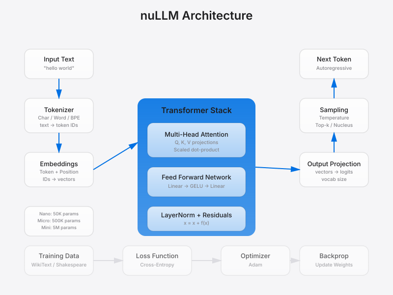

Minimal LLM built from scratch. On-system Claude alternative - no API costs.

nuLLM implements core transformer concepts from "Attention Is All You Need" in ~500 lines of Python. Built to understand how modern LLMs actually work under the hood.
cd nuLLM
python3 -m venv venv
source venv/bin/activate
pip install torch numpy tiktoken tqdmpython src/chat.pypython examples/quick_test.py # End-to-end verification
python examples/test_tokenizer.py # Tokenizer encode/decode
python examples/test_model.py # Model forward passNano (demo): 50K params, 2 layers, 2 heads, 32 embed, 64 context
Micro (learning): 500K params, 4 layers, 4 heads, 128 embed, 256 context
Mini (usable): 5M params, 6 layers, 8 heads, 256 embed, 512 context
| Model | Params | Layers | Heads | Context |
|---|---|---|---|---|
| GPT-2 | 124M | 12 | 12 | 1024 |
| GPT-3 | 175B | 96 | 96 | 2048 |
| nuLLM Nano | 50K | 2 | 2 | 64 |
| nuLLM Mini | 5M | 6 | 8 | 512 |
nuLLM is ~2500x smaller than GPT-2 but uses the same transformer architecture.